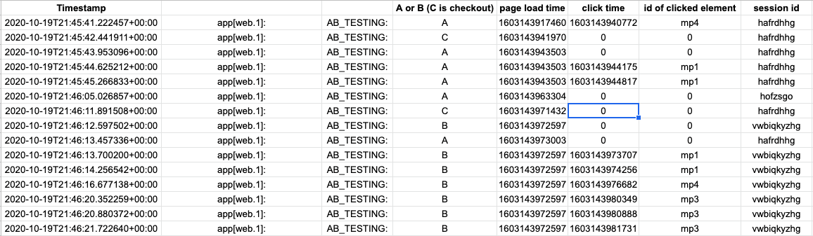
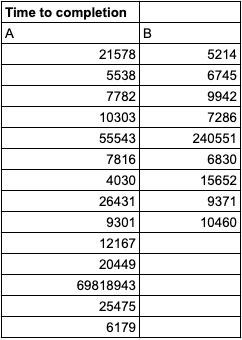
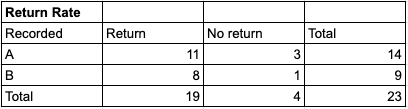

Collecting Data and Applying Scripts
Data Collection Process:
I sent my link to my peer classmates during studio hours for data collection.
They were randomly given one of the two versions, and had to fill at least $150 of cacti/succulents, go to the checkout page, and come back to the main page.
Extracting and Transitioning Data:
I followed step 5 from studio 5 readme to extract and filter data from my website.
Then I turned the text file into csv file without any scientific notations.

Cleaning and Running Data:
In the csv file, I hand computed time to completion and counted return rate for both versions.
Then I passed these values to python file from studio 6 to compute p values, t score (time for completion), and chi^2 value (return rate).

